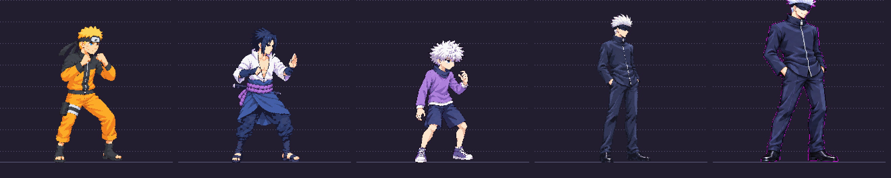

Needs review — correction recommended before approval. New model sheet only. Approved v03 remains in the game; no idle redraw has started.
Identity and neutral poses improved: hands out of pockets in views 1–2, clearer right profile, pocket stance in view 5. The best of three attempts still exceeds the declared 2× scale and raw palette limit.
View 5 is 518 source pixels tall including hair; the required half-scale figure is 260px tall with the lineup background threshold and clips in the lineup. Approximate covered skull-to-sole length is 479px versus 430 ±5%; head/build measurements remain provisional. Raw image has 84,170 RGB colors rather than ≤48. These are visible unresolved gates, not an approval-ready build.

Detailed QA · Measurements · Pack report · Existing approved Gojo in game